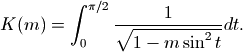
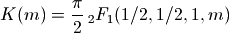
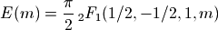

Elliptic functions¶
Elliptic functions historically comprise the elliptic integrals and their inverses, and originate from the problem of computing the arc length of an ellipse. From a more modern point of view, an elliptic function is defined as a doubly periodic function, i.e. a function which satisfies

for some half-periods  with
with
![\mathrm{Im}[\omega_1 / \omega_2] > 0](../_images/math/a84d1ba8341d6e90f45b25504738e0578a4990e6.png) . The canonical elliptic
functions are the Jacobi elliptic functions. More broadly, this section
includes quasi-doubly periodic functions (such as the Jacobi theta
functions) and other functions useful in the study of elliptic functions.
. The canonical elliptic
functions are the Jacobi elliptic functions. More broadly, this section
includes quasi-doubly periodic functions (such as the Jacobi theta
functions) and other functions useful in the study of elliptic functions.
Many different conventions for the arguments of
elliptic functions are in use. It is even standard to use
different parameterizations for different functions in the same
text or software (and mpmath is no exception).
The usual parameters are the elliptic nome  , which usually
must satisfy
, which usually
must satisfy  ; the elliptic parameter
; the elliptic parameter  (an arbitrary
complex number); the elliptic modulus
(an arbitrary
complex number); the elliptic modulus  (an arbitrary complex
number); and the half-period ratio
(an arbitrary complex
number); and the half-period ratio  , which usually must
satisfy
, which usually must
satisfy ![\mathrm{Im}[\tau] > 0](../_images/math/a7ef44075cbdf48282414af0ac84fababad983c7.png) .
These quantities can be expressed in terms of each other
using the following relations:
.
These quantities can be expressed in terms of each other
using the following relations:


In addition, an alternative definition is used for the nome in number theory, which we here denote by q-bar:

For convenience, mpmath provides functions to convert between the various parameters (qfrom(), mfrom(), kfrom(), taufrom(), qbarfrom()).
References
Elliptic arguments¶
qfrom()¶
- mpmath.qfrom(**kwargs)¶
Returns the elliptic nome
, given any of  :
:>>> from mpmath import * >>> mp.dps = 25; mp.pretty = True >>> qfrom(q=0.25) 0.25 >>> qfrom(m=mfrom(q=0.25)) 0.25 >>> qfrom(k=kfrom(q=0.25)) 0.25 >>> qfrom(tau=taufrom(q=0.25)) (0.25 + 0.0j) >>> qfrom(qbar=qbarfrom(q=0.25)) 0.25
qbarfrom()¶
- mpmath.qbarfrom(**kwargs)¶
Returns the number-theoretic nome
 , given any of
:
, given any of
:>>> from mpmath import * >>> mp.dps = 25; mp.pretty = True >>> qbarfrom(qbar=0.25) 0.25 >>> qbarfrom(q=qfrom(qbar=0.25)) 0.25 >>> qbarfrom(m=extraprec(20)(mfrom)(qbar=0.25)) # ill-conditioned 0.25 >>> qbarfrom(k=extraprec(20)(kfrom)(qbar=0.25)) # ill-conditioned 0.25 >>> qbarfrom(tau=taufrom(qbar=0.25)) (0.25 + 0.0j)
mfrom()¶
- mpmath.mfrom(**kwargs)¶
Returns the elliptic parameter
, given any of
:>>> from mpmath import * >>> mp.dps = 25; mp.pretty = True >>> mfrom(m=0.25) 0.25 >>> mfrom(q=qfrom(m=0.25)) 0.25 >>> mfrom(k=kfrom(m=0.25)) 0.25 >>> mfrom(tau=taufrom(m=0.25)) (0.25 + 0.0j) >>> mfrom(qbar=qbarfrom(m=0.25)) 0.25
As
 and
and  , rapidly approaches
, rapidly approaches
 and
and  respectively:
respectively:>>> mfrom(q=0.75) 0.9999999999999798332943533 >>> mfrom(q=-0.75) -49586681013729.32611558353 >>> mfrom(q=1) 1.0 >>> mfrom(q=-1) -inf
The inverse nome as a function of
has an integer
Taylor series expansion:>>> taylor(lambda q: mfrom(q), 0, 7) [0.0, 16.0, -128.0, 704.0, -3072.0, 11488.0, -38400.0, 117632.0]
kfrom()¶
- mpmath.kfrom(**kwargs)¶
Returns the elliptic modulus
, given any of
:>>> from mpmath import * >>> mp.dps = 25; mp.pretty = True >>> kfrom(k=0.25) 0.25 >>> kfrom(m=mfrom(k=0.25)) 0.25 >>> kfrom(q=qfrom(k=0.25)) 0.25 >>> kfrom(tau=taufrom(k=0.25)) (0.25 + 0.0j) >>> kfrom(qbar=qbarfrom(k=0.25)) 0.25
As
and , rapidly approaches
and  respectively:
respectively:>>> kfrom(q=0.75) 0.9999999999999899166471767 >>> kfrom(q=-0.75) (0.0 + 7041781.096692038332790615j) >>> kfrom(q=1) 1 >>> kfrom(q=-1) (0.0 + +infj)
taufrom()¶
- mpmath.taufrom(**kwargs)¶
Returns the elliptic half-period ratio
, given any of
:>>> from mpmath import * >>> mp.dps = 25; mp.pretty = True >>> taufrom(tau=0.5j) (0.0 + 0.5j) >>> taufrom(q=qfrom(tau=0.5j)) (0.0 + 0.5j) >>> taufrom(m=mfrom(tau=0.5j)) (0.0 + 0.5j) >>> taufrom(k=kfrom(tau=0.5j)) (0.0 + 0.5j) >>> taufrom(qbar=qbarfrom(tau=0.5j)) (0.0 + 0.5j)
Elliptic integrals¶
ellipk()¶
- mpmath.ellipk(x, **kwargs)¶
Evaluates the complete elliptic integral of the first kind,
 , defined by
, defined by
Note that the argument is the parameter
 ,
not the modulus which is sometimes used.
,
not the modulus which is sometimes used.Alternatively, in terms of a hypergeometric function, we have:

Examples
Values and limits include:
>>> from mpmath import * >>> mp.dps = 25; mp.pretty = True >>> ellipk(0) 1.570796326794896619231322 >>> ellipk(inf) (0.0 + 0.0j) >>> ellipk(-inf) 0.0 >>> ellipk(1) +inf >>> ellipk(-1) 1.31102877714605990523242 >>> ellipk(2) (1.31102877714605990523242 - 1.31102877714605990523242j)
Verifying the defining integral and hypergeometric representation:
>>> ellipk(0.5) 1.85407467730137191843385 >>> quad(lambda t: (1-0.5*sin(t)**2)**-0.5, [0, pi/2]) 1.85407467730137191843385 >>> pi/2*hyp2f1(0.5,0.5,1,0.5) 1.85407467730137191843385
Evaluation is supported for arbitrary complex
:>>> ellipk(3+4j) (0.9111955638049650086562171 + 0.6313342832413452438845091j)
A definite integral:
>>> quad(ellipk, [0, 1]) 2.0
ellipe()¶
- mpmath.ellipe(x, **kwargs)¶
Evaluates the complete elliptic integral of the second kind,
 , defined by
, defined by
Note that the argument is the parameter
,
not the modulus which is sometimes used.Alternatively, in terms of a hypergeometric function, we have:

Examples
Basic values and limits:
>>> from mpmath import * >>> mp.dps = 25; mp.pretty = True >>> ellipe(0) 1.570796326794896619231322 >>> ellipe(1) 1.0 >>> ellipe(-1) 1.910098894513856008952381 >>> ellipe(2) (0.5990701173677961037199612 + 0.5990701173677961037199612j) >>> ellipe(inf) (0.0 + +infj) >>> ellipe(-inf) +inf
Verifying the defining integral and hypergeometric representation:
>>> ellipe(0.5) 1.350643881047675502520175 >>> quad(lambda t: sqrt(1-0.5*sin(t)**2), [0, pi/2]) 1.350643881047675502520175 >>> pi/2*hyp2f1(0.5,-0.5,1,0.5) 1.350643881047675502520175
Evaluation is supported for arbitrary complex
:>>> ellipe(0.5+0.25j) (1.360868682163129682716687 - 0.1238733442561786843557315j) >>> ellipe(3+4j) (1.499553520933346954333612 - 1.577879007912758274533309j)
A definite integral:
>>> quad(ellipe, [0,1]) 1.333333333333333333333333
Jacobi theta functions¶
jtheta()¶
- mpmath.jtheta(n, z, q, derivative=0)¶
Computes the Jacobi theta function
 , where
, where
 , defined by the infinite series:
, defined by the infinite series:
The theta functions are functions of two variables:
 is the argument, an arbitrary real or complex number
is the argument, an arbitrary real or complex number- is the nome, which must be a real or complex number
in the unit disk (i.e. ). For
 , the
series converge very quickly, so the Jacobi theta functions
can efficiently be evaluated to high precision.
, the
series converge very quickly, so the Jacobi theta functions
can efficiently be evaluated to high precision.
The compact notations
 and
and  are also frequently
encountered. Finally, Jacobi theta functions are frequently
considered as functions of the half-period ratio
and then usually denoted by
are also frequently
encountered. Finally, Jacobi theta functions are frequently
considered as functions of the half-period ratio
and then usually denoted by  .
.Optionally, jtheta(n, z, q, derivative=d) with
 computes
a
computes
a  -th derivative with respect to .
-th derivative with respect to .Examples and basic properties
Considered as functions of
, the Jacobi theta functions may be
viewed as generalizations of the ordinary trigonometric functions
cos and sin. They are periodic functions:>>> from mpmath import * >>> mp.dps = 25; mp.pretty = True >>> jtheta(1, 0.25, '0.2') 0.2945120798627300045053104 >>> jtheta(1, 0.25 + 2*pi, '0.2') 0.2945120798627300045053104
Indeed, the series defining the theta functions are essentially trigonometric Fourier series. The coefficients can be retrieved using fourier():
>>> mp.dps = 10 >>> nprint(fourier(lambda x: jtheta(2, x, 0.5), [-pi, pi], 4)) ([0.0, 1.68179, 0.0, 0.420448, 0.0], [0.0, 0.0, 0.0, 0.0, 0.0])
The Jacobi theta functions are also so-called quasiperiodic functions of
and , meaning that for fixed ,
and  are the same
except for an exponential factor:
are the same
except for an exponential factor:>>> mp.dps = 25 >>> tau = 3*j/10 >>> q = exp(pi*j*tau) >>> z = 10 >>> jtheta(4, z+tau*pi, q) (-0.682420280786034687520568 + 1.526683999721399103332021j) >>> -exp(-2*j*z)/q * jtheta(4, z, q) (-0.682420280786034687520568 + 1.526683999721399103332021j)
The Jacobi theta functions satisfy a huge number of other functional equations, such as the following identity (valid for any
):>>> q = mpf(3)/10 >>> jtheta(3,0,q)**4 6.823744089352763305137427 >>> jtheta(2,0,q)**4 + jtheta(4,0,q)**4 6.823744089352763305137427
Extensive listings of identities satisfied by the Jacobi theta functions can be found in standard reference works.
The Jacobi theta functions are related to the gamma function for special arguments:
>>> jtheta(3, 0, exp(-pi)) 1.086434811213308014575316 >>> pi**(1/4.) / gamma(3/4.) 1.086434811213308014575316
jtheta() supports arbitrary precision evaluation and complex arguments:
>>> mp.dps = 50 >>> jtheta(4, sqrt(2), 0.5) 2.0549510717571539127004115835148878097035750653737 >>> mp.dps = 25 >>> jtheta(4, 1+2j, (1+j)/5) (7.180331760146805926356634 - 1.634292858119162417301683j)
Evaluation of derivatives:
>>> mp.dps = 25 >>> jtheta(1, 7, 0.25, 1); diff(lambda z: jtheta(1, z, 0.25), 7) 1.209857192844475388637236 1.209857192844475388637236 >>> jtheta(1, 7, 0.25, 2); diff(lambda z: jtheta(1, z, 0.25), 7, 2) -0.2598718791650217206533052 -0.2598718791650217206533052 >>> jtheta(2, 7, 0.25, 1); diff(lambda z: jtheta(2, z, 0.25), 7) -1.150231437070259644461474 -1.150231437070259644461474 >>> jtheta(2, 7, 0.25, 2); diff(lambda z: jtheta(2, z, 0.25), 7, 2) -0.6226636990043777445898114 -0.6226636990043777445898114 >>> jtheta(3, 7, 0.25, 1); diff(lambda z: jtheta(3, z, 0.25), 7) -0.9990312046096634316587882 -0.9990312046096634316587882 >>> jtheta(3, 7, 0.25, 2); diff(lambda z: jtheta(3, z, 0.25), 7, 2) -0.1530388693066334936151174 -0.1530388693066334936151174 >>> jtheta(4, 7, 0.25, 1); diff(lambda z: jtheta(4, z, 0.25), 7) 0.9820995967262793943571139 0.9820995967262793943571139 >>> jtheta(4, 7, 0.25, 2); diff(lambda z: jtheta(4, z, 0.25), 7, 2) 0.3936902850291437081667755 0.3936902850291437081667755
Possible issues
For
 or
or  , jtheta() raises
ValueError. This exception is also raised for
, jtheta() raises
ValueError. This exception is also raised for  extremely
close to 1 (or equivalently very close to 0), since the
series would converge too slowly:
extremely
close to 1 (or equivalently very close to 0), since the
series would converge too slowly:>>> jtheta(1, 10, 0.99999999 * exp(0.5*j)) Traceback (most recent call last): ... ValueError: abs(q) > THETA_Q_LIM = 1.000000
Jacobi elliptic functions¶
ellipfun()¶
- mpmath.ellipfun(kind, u=None, m=None, q=None, k=None, tau=None)¶
Computes any of the Jacobi elliptic functions, defined in terms of Jacobi theta functions as

or more generally computes a ratio of two such functions. Here
 , and
, and  denotes the nome (see
nome()). Optionally, you can specify the nome directly
instead of by passing q=<value>, or you can directly
specify the elliptic parameter with k=<value>.
denotes the nome (see
nome()). Optionally, you can specify the nome directly
instead of by passing q=<value>, or you can directly
specify the elliptic parameter with k=<value>.The first argument should be a two-character string specifying the function using any combination of 's', 'c', 'd', 'n'. These letters respectively denote the basic functions
 ,
,  ,
,  , and .
The identifier specifies the ratio of two such functions.
For example, 'ns' identifies the function
, and .
The identifier specifies the ratio of two such functions.
For example, 'ns' identifies the function
and 'cd' identifies the function

If called with only the first argument, a function object evaluating the chosen function for given arguments is returned.
Examples
Basic evaluation:
>>> from mpmath import * >>> mp.dps = 25; mp.pretty = True >>> ellipfun('cd', 3.5, 0.5) -0.9891101840595543931308394 >>> ellipfun('cd', 3.5, q=0.25) 0.07111979240214668158441418
The sn-function is doubly periodic in the complex plane with periods
 and
and  (see ellipk()):
(see ellipk()):>>> sn = ellipfun('sn') >>> sn(2, 0.25) 0.9628981775982774425751399 >>> sn(2+4*ellipk(0.25), 0.25) 0.9628981775982774425751399 >>> chop(sn(2+2*j*ellipk(1-0.25), 0.25)) 0.9628981775982774425751399
The cn-function is doubly periodic with periods
and  :
:>>> cn = ellipfun('cn') >>> cn(2, 0.25) -0.2698649654510865792581416 >>> cn(2+4*ellipk(0.25), 0.25) -0.2698649654510865792581416 >>> chop(cn(2+4*j*ellipk(1-0.25), 0.25)) -0.2698649654510865792581416
The dn-function is doubly periodic with periods
 and :
and :>>> dn = ellipfun('dn') >>> dn(2, 0.25) 0.8764740583123262286931578 >>> dn(2+2*ellipk(0.25), 0.25) 0.8764740583123262286931578 >>> chop(dn(2+4*j*ellipk(1-0.25), 0.25)) 0.8764740583123262286931578
Modular functions¶
kleinj()¶
- mpmath.kleinj(tau=None, **kwargs)¶
Evaluates the Klein j-invariant, which is a modular function defined for
in the upper half-plane as
where
 and
and  are the modular invariants of the Weierstrass
elliptic function,
are the modular invariants of the Weierstrass
elliptic function,
An alternative, common notation is that of the j-function
 .
.Examples
Verifying the functional equation
 :
:>>> from mpmath import * >>> mp.dps = 25; mp.pretty = True >>> tau = 0.625+0.75*j >>> tau = 0.625+0.75*j >>> kleinj(tau) (-0.1507492166511182267125242 + 0.07595948379084571927228948j) >>> kleinj(tau+1) (-0.1507492166511182267125242 + 0.07595948379084571927228948j) >>> kleinj(-1/tau) (-0.1507492166511182267125242 + 0.07595948379084571927228946j)
The j-function has a famous Laurent series expansion in terms of the nome
 ,
,  :
:>>> mp.dps = 15 >>> taylor(lambda q: 1728*q*kleinj(qbar=q), 0, 5, singular=True) [1.0, 744.0, 196884.0, 21493760.0, 864299970.0, 20245856256.0]
The j-function admits exact evaluation at special algebraic points related to the Heegner numbers 1, 2, 3, 7, 11, 19, 43, 67, 163:
>>> @extraprec(10) ... def h(n): ... v = (1+sqrt(n)*j) ... if n > 2: ... v *= 0.5 ... return v ... >>> mp.dps = 25 >>> for n in [1,2,3,7,11,19,43,67,163]: ... n, chop(1728*kleinj(h(n))) ... (1, 1728.0) (2, 8000.0) (3, 0.0) (7, -3375.0) (11, -32768.0) (19, -884736.0) (43, -884736000.0) (67, -147197952000.0) (163, -262537412640768000.0)
Also at other special points, the j-function assumes explicit algebraic values, e.g.:
>>> chop(1728*kleinj(j*sqrt(5))) 1264538.909475140509320227 >>> identify(cbrt(_)) # note: not simplified '((100+sqrt(13520))/2)' >>> (50+26*sqrt(5))**3 1264538.909475140509320227